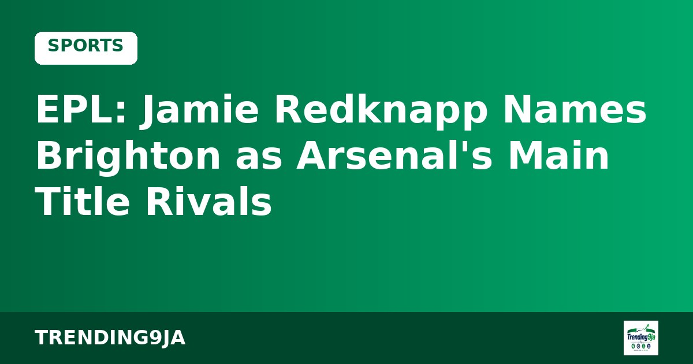

Man Utd consider sacking Michael Carrick during international break - Report
Manchester United hierarchy are reviewing Michael Carrick’s position as manager during the November international break, according to reports.

Cardiff residents have expressed strong objections to plans to extend licensing hours for the upcoming British heavyweight boxing clash between Tyson Fury and Anthony Joshua, according to Punch via a BBC report.
The bout is scheduled to take place at the Principality Stadium on December 11. Organizers want the event to continue until 3:00 am on December 12 to cater to prime-time television audiences in the United States.
Currently, the stadium operates under a 1:00 am curfew whenever its roof is closed. Management has applied for permission to continue licensed activities, such as music and alcohol sales, until 3:00 am, while keeping the venue open to spectators until 3:30 am.
Cardiff Council’s licensing subcommittee is scheduled to deliberate on the application on November 25. Nearby residents have raised concerns over potential anti-social behavior, severe traffic congestion, public safety issues, and late-night noise disturbance.
One resident living directly opposite the venue supported hosting the fight but urged officials to mandate a street dispersal plan, keep stewards on duty until crowds leave, stop outdoor amplified music after midnight, and clean surrounding streets by 8:00 am on December 12.
Other objectors, including parents of young children, warned that late shouting, taxis, and music would cause severe disruption for local families long into the early morning. Conversely, some residents backed the extension, pointing to the economic benefits the major sporting event could bring to the city.
Sources: Punch
← More Sports stories
Manchester United hierarchy are reviewing Michael Carrick’s position as manager during the November international break, according to reports.

Manchester United scored two late stoppage-time goals to secure a dramatic 4-4 draw against Aston Villa in the English Premier League on Sunday.

Jamie Redknapp has tipped Brighton as Arsenal's main Premier League title contenders following Manchester City's recent slump, according to Daily Post.
Nigeria's trending news, politics and entertainment, straight to your email.
By subscribing you agree to our Privacy Policy. Unsubscribe any time.